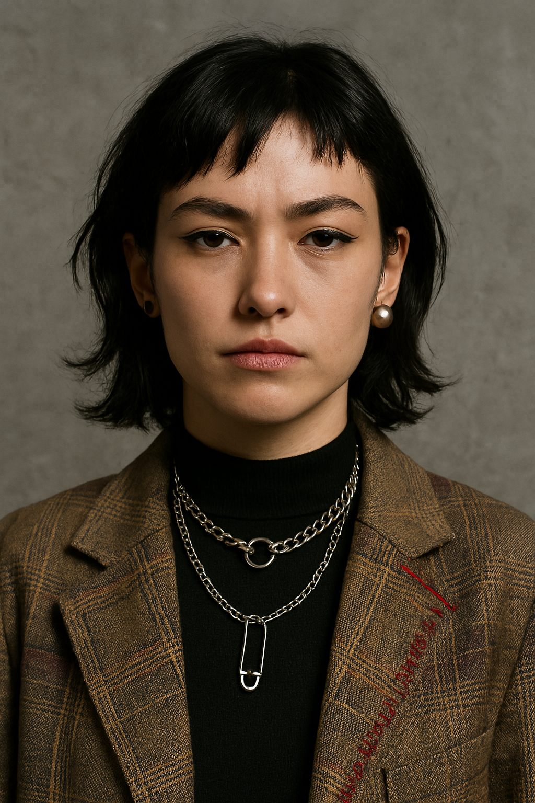

Emma Smith

Profile summary
Creative and detail-oriented fashion enthusiast with a background in web design and over four years of experience in customer service. Currently working as a barista by day and an independent seamstress by night, blending design sensibility with hands-on craftsmanship. Seeking opportunities to grow within the fashion industry while bringing a unique fusion of digital and physical design skills to the table.
Education
Educational Program
A.A. in Web & Interactive Design
Greenwood Community College, Oregon, USA
Graduated: 2019
Highlights
- Learned front-end design (HTML/CSS, a touch of JavaScript)
- Focused on user experience, layout design, and typography
- Capstone project: Designed a responsive fashion portfolio site themed around “Techno-Vintage” aesthetics
- GPA: 3.8
Extracurricular Activities / Projects
-
Fashion Portfolio Website
Designed and developed a personal portfolio website showcasing my fashion design projects, including sketches, fabric swatches, and completed garments.
-
Fashion Blog
Created a blog where I share my thoughts on current fashion trends, DIY projects, and sustainable fashion practices.
-
Fashion Club President (2018–2019)
Started the school’s first Sustainable Fashion Club, where students thrifted clothes and held campus runway shows using upcycled materials.
-
Freelance Design Gigs
Took on part-time freelance work designing logos and websites for local cafés and Etsy shops. One of the logos is still printed on the coffee cups at a local vegan café in Portland.
-
Student Exchange Support Volunteer
Helped new international students adjust to life on campus—translating, touring, and even designing a printable “Welcome to Oregon” zine.
-
Interned at a Local Textile Studio
Spent a summer internship at a small fabric dyeing workshop. That’s where I fell hard for natural fibers, patchwork, and learned that not all indigo is created equal.
Work Experience
Freelance Seamstress & Fashion Designer
Tokyo, Japan | 2020–Present
- Designed and created custom garments, specializing in upcycled materials and streetwear-inspired silhouettes
- Managed full client lifecycle: design consultation, fittings, production, and delivery
- Produced 3 mini capsule collections independently, showcased online and at small local events
- Collaborated with photographers and models to build personal lookbook and visual branding
- Built and maintained a portfolio website showcasing work and process blogs
- Developed strong time management by balancing freelance projects alongside part-time employment
Barista – Artisan Coffee House
Tokyo, Japan | 2020–Present
- Prepared and served high-quality espresso and specialty drinks in a fast-paced environment
- Maintained a clean, welcoming shop atmosphere while delivering friendly and consistent customer service
- Handled daily cash reconciliation and inventory restocking, demonstrating accountability and trust
- Trained new staff on drink preparation, POS system, and customer interaction best practices
- Designed seasonal drink menus and hand-drawn chalkboard signage to enhance customer experience
Freelance Web & Graphic Designer
Remote | 2018–2020
- Created responsive websites, brand kits, and logos for small businesses and student organizations
- Worked with clients to understand brand identity and translate it into visual assets
- Specialized in minimalist, mobile-first design with strong UX/UI sensibilities
- Used Adobe Creative Suite, Figma, and front-end coding (HTML/CSS)
- Delivered projects on tight deadlines with an emphasis on clear communication and self-discipline
Skills
Design & Creative
- Garment Construction & Pattern Drafting
- Textile Knowledge (Natural Dyes, Upcycling, Fabric Sourcing)
- Fashion Illustration & Concept Development
- Adobe Creative Suite (Illustrator, Photoshop, InDesign)
- Lookbook & Visual Identity Creation
Web & Digital
- HTML / CSS (Responsive Design, Grid/Flexbox)
- Figma / Canva (UI Mockups, Prototyping, Branding Kits)
- Basic JavaScript
- Portfolio Site Management (Hosting, Updates, SEO basics)
- WordPress / Shopify Customization (beginner level)
Business & Soft Skills
- Bilingual: English (Native), Japanese (Fluent)
- Client Communication & Creative Briefing
- Time Management & Multitasking
- Customer Service & Conflict Resolution
- Team Training & Onboarding
Awards & Recognition
Best Concept Design – “Thrift to Runway” Fashion Showcase
Tokyo Creators Collective | 2023
Awarded for a standout capsule collection made entirely from second-hand garments. Recognized for originality, sustainability, and emotional storytelling through design.
Outstanding Student Project – Web Portfolio Design
Greenwood Community College | 2019
Selected by faculty as the top design in the graduating class for clean UX, mobile-first structure, and aesthetic cohesion in a final portfolio site.
Emerging Talent Award – Indie Fashion Night Market
Shimokitazawa, Tokyo | 2022
Recognized as a breakout creator among over 40 indie designers. Gained attention for her hand-stitched blazer line featuring mismatched silhouettes and intentional imperfections.
Customer Excellence Recognition
Artisan Coffee House | 2021
Nominated by regular customers and team leads for consistently warm service, quick problem-solving, and turning latte foam into unexpected works of art.
Other
Little bit about my personal life
How to connect with me